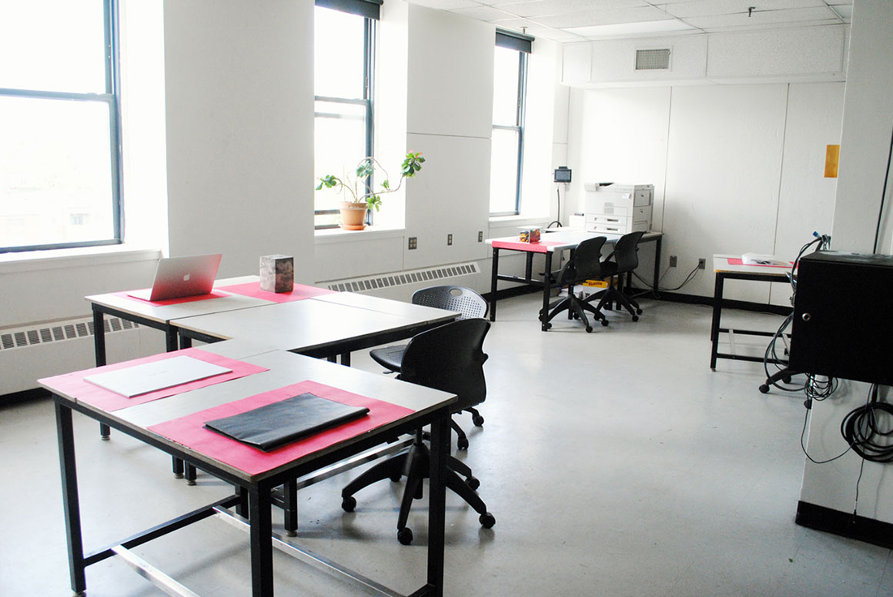
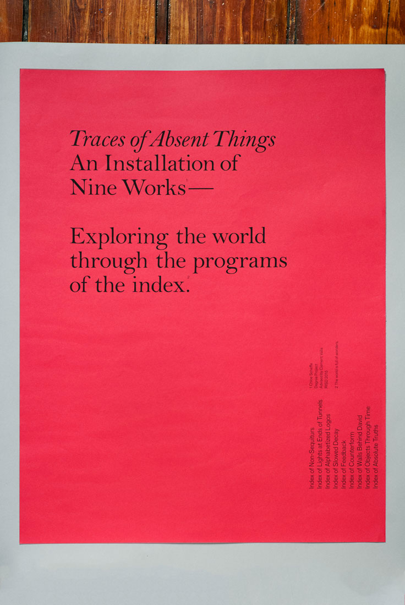
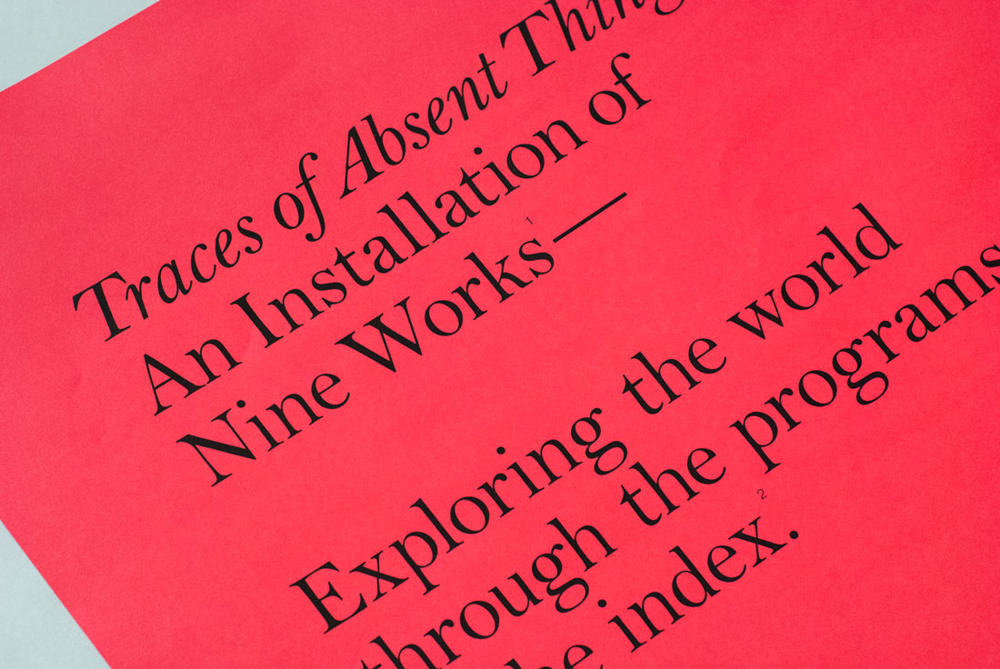
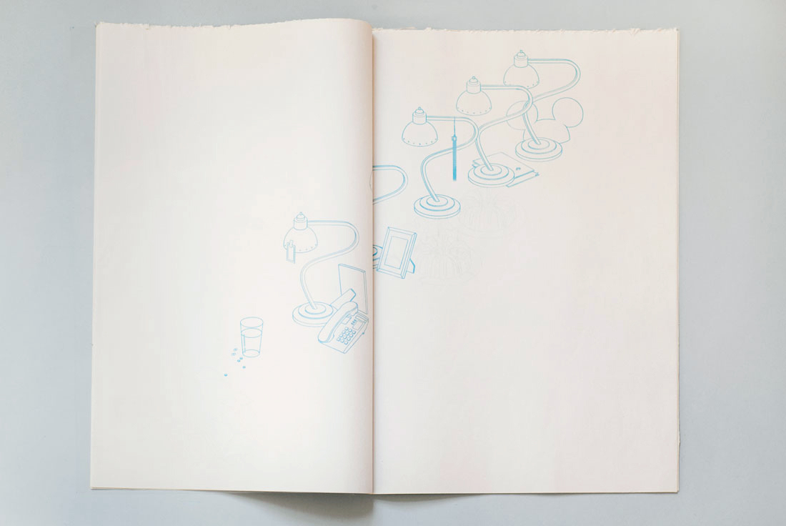
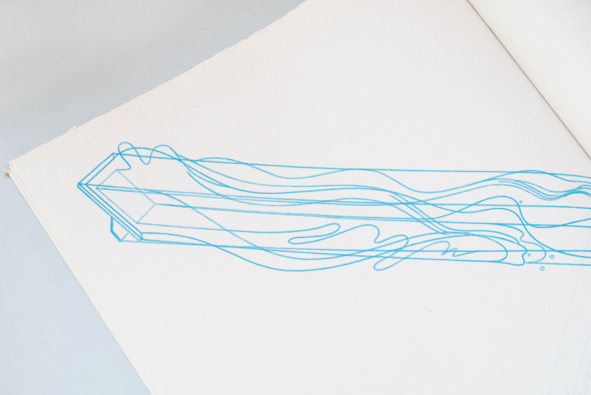
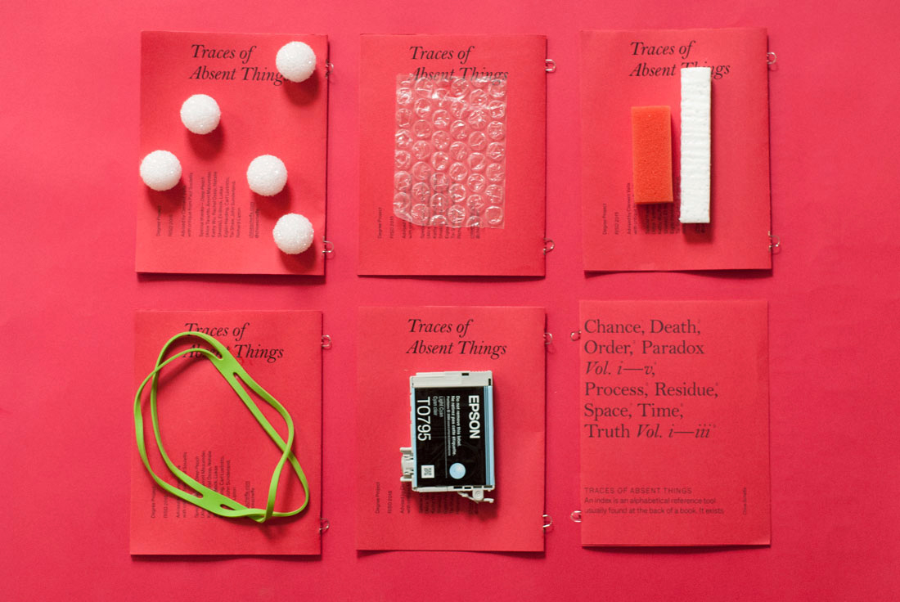

 


→ CHANCE
Strength of structure vs. influence of randomness. Content that intentionally resists logical ordering (surrounding or 'background' element called out as a result). Parasitic, dependent content. Playspace. Testing flexibility and authority of source. Inferred meaning, meaning produced by chance.


→ DEATH
Meaning from arbitrary order. Narrative implications of single image vs. sequenced
images. The idiom as complete visual thought. Using abstracted form to express and
order concept. Utilizing symbolism of light.
→ ORDER
Exposing operation of traditional index. Questioning what content can be run through which systems. Rationality as irrational. Recursive indexing. Running a system on content not intended for it to highlight its flaws, limits of operation.


→ PROCESS
Attaching physical weight to data to speak to instability-value disproportion, problem of digital information in physical world. Inverted dead drop. Moving user to data. Note— At event of original archive, drive contained audio files pertaining to creation of Traces of Absent Things. Content may have been altered since.


→ RESIDUE
Carving into material to produce form. Discards that speak to nature of intended (primary) object. Negative space imagined as three dimensional object. Second life. Trace of absent thing. Glass structure has same dimensions/volume as project scraps were produced from.

→ PARADOX
Flattening of time. Index, sequence as single frame. Opposing forces forced together; artificial versus organic; stillness against change (decay). Paradoxical gesture.


→ TRUTH
Fixing, adhering the unchanging to form (concept is fixed, form is fluid). Infinite sequence. Action as index.
Note— This index should be performed, not viewed.


→ SPACE
Existing photographs altered to highlight space over object. Inversion of focus,
perspective, the viewer's eye, the photographer's intent. Reveal of 'invisible' space.
Seeing the unseen.

→ TIME
Images with 'charge', connotation, association. Index of change through time. Objects
as language, arranged to be read. Poetics. Relationship of viewer to object; viewer as
participant in scene, located by page. Time as counterform (intangible demarcated
by tangibles).





